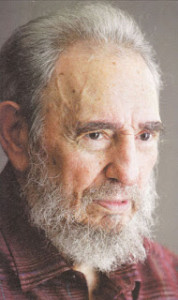

Ayer fui con uno de mis hijos a la Plaza a ver a Fidel (o sea a estar entre el pueblo humano -más que cubano- que fue más que a rendirle -más que tributo- su compromiso de cómo él luchar por los pobres de la tierra). Fui con un pulóver rojo (rojito) que decía en el pecho Venezuela, por un grupo de amigos (más bien hermanos) de la tierra de Chávez (es decir Bolívar) que años tras año han venido a Cuba a trovar y que han acogido con todas sus almas (y recursos) a cuanto cubano –especialmente trovadores- hacen estancia en Caracas. Sé que están penando ahora siguiendo el rastro en Telesur de cada noticia llorando por no poder estar aquí. Así que de alguna manera los llevé conmigo de rojo rojito.En una de aquellas cofradías silvísticas (y hoy cumple 70 Silvio Rodriguez) nuestroamericanas en el diciembre de los 50 de la Revolución se sumaron jóvenes españoles y colombianos, haciendo crecer la guerrilla. Andrea, una de las colombianas, viene cada vez que logra algunos ahorritos. En cuanto llegó la dura noticia me dijo que haría todo lo posible por estar aquí. Ayer me escribió poniendo entre signos de admiración su logro ¡voy a llegar a tiempo el 29!
A punto del despegue me cuenta hoy desde el Aeropuerto Internacional El Dorado:
DESDE BOGOTÁ ANDREA
“Fidel es y ha sido parte de mi familia siempre. Más allá del proyecto social y político que sin duda es el modelo que guía nuestras apuestas en la esfera pública, Fidel ha estado presente en lo más íntimo, en lo más cotidiano. Así de grande ha sido. Me llena de orgullo decirlo. Y por eso, nada es hoy más importante para mí que estar en su pueblo y con su gran familia Cubana y latinoamericana, despidiéndolo.
Andrea Oramas”
De los trovadores cubanos Lien y Rey
Como todo el pueblo cubano, hemos estado sobrecogidos y consternados todos estos días luego de la noticia del fallecimiento de Fidel. Los que conocen nuestro trabajo saben que nunca hemos vacilado en cuestionar lo mal hecho de la institucionalidad y el funcionarismo patriotero que a veces circunda dentro de la revolución cubana y que podremos estar de acuerdo o no, con algunos aspectos que en ella se aplican, pero creemos que todos debemos reconocer el carácter humanista y filantrópico de esta, impulsado por su gestor y principal líder que sin dudas dignificó a toda una nación con su inteligencia, carisma y extraordinaria sapiencia.
Ha sido inevitable estremecernos ante la noticia y quedarnos en un estado de perplejidad y tristeza frente al televisor donde se hace habitual oír que “Fidel seguirá vivo en cada uno de nosotros” y queremos pensar que es un sentimiento genuino, que cada dirigente y funcionario de este país tendrá vivo a Fidel en su conciencia a la hora de obrar para el pueblo, sin temer a las transformaciones propias de una sociedad del siglo XXl, solo así estaremos haciendo realidad su legado. Mientras nosotros seguiremos cantando lo que pensamos, a veces con voz enamorada, other, con una voz más crítica, pero siempre para bien y eternamente agradecidos.
Hasta siempre Fidel.
LIEN Y REY.
De Tato Ayres (trovador y artista plástico chileno que vino muy joven a Cuba tras el golpe militar facista de Augusto Pinochet en septiembre de 1973 contra el Gobierno de la Unidad Popular de Salvador Allende):
“Queridos amigos y familia, la noticia nos consterno y nos llenó de tristeza, hoy la plaza estaba colmada y sigue llena de muchos cubanos hasta altas horas de la noche, lo acompaña todo su pueblo que lo admiro y admira por sus enseñanzas y por su lealtad a la causa revolucionaria, mañana estaremos nuevamente para su despedida y por la tarde 7 PM. en el acto central en la misma plaza de la revolución partirá de regreso por el camino que lo trajo victorioso desde los días del triunfo revolucionario y regresara victorioso nuevamente a su Santiago de cuba, coincidentemente el yate Granma zarpa en la madrugada de un 25 November of 1956 el mismo día de su fallecimiento, hoy vuelve cargado de victorias y el ejemplo que dejo para nuestra américa latina y el mundo, como chileno y latinoamericano le debo y debemos a esta gran revolución y en especial a Fidel que nos acogió y nos brindó toda su solidaridad, su cariño, su tierra, su pueblo amistoso y solidario, gran amigo de allende y de su pueblo, solo decir viva el comandante eterno y viva el genio de la revolución latinoamericana.”
DESDE ARGENTINA
De Tere Crespi:
Fide, otra vez una muerte significativa para mi me coge fuera de Cuba. Tengo la necesidad de decirte que como muchos allá, no he parado de llorar desde que me enteré de la muerte de Fidel, que me he fajado con mucha gente en las redes, que estoy pegada a Telesur desde hace dos dias compartiendo el duelo y el inmenso silencio que cubre La Habana. Nada me hubiera gustado más que estar alli en este momento. Sabes que siento Cuba mi patria y agradezco todo lo que vivo allí y me siento parte de ese pueblo desde siempre. Te mando un abrazo hermanado en el dolor de un imprescindible que se va, ese padre al que no vemos pero sabemos que está. Ya conversaremos a mi regreso, pero desde la distancia comparto el dolor y la esperanza de que lo sembrado siga creciendo. Hasta la Victoria Siempre!!!!!!!!!!!

Recent Comments